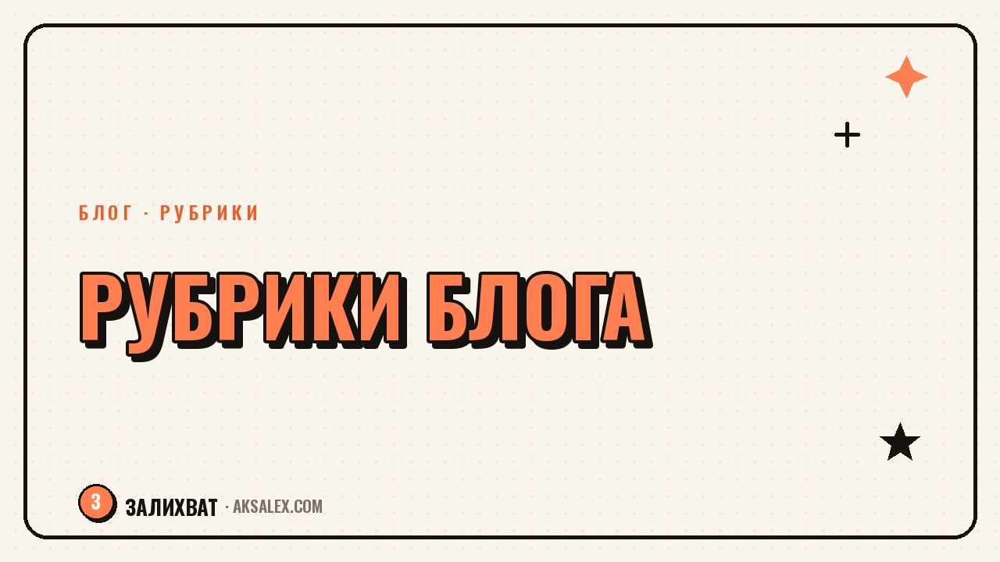

Как придумать рубрики для блога с ИИ

Рубрики - это опоры блога. Когда у тебя есть три-пять постоянных тематических линий, ты перестаёшь каждый день ломать голову над тем, о чём писать: открываешь сетку и видишь, какая рубрика сегодня. Нейросеть помогает собрать эти рубрики за один вечер, отталкиваясь от твоей ниши и аудитории. Разберём, зачем нужны рубрики, как их выделить с ИИ и как разложить по календарю.
Зачем блогу рубрики
Без рубрик блог превращается в хаотичный поток: сегодня рецепт, завтра философия, послезавтра распродажа. Аудитория не понимает, зачем на тебя подписана, а ты каждый раз выдумываешь тему с нуля. Рубрики решают обе проблемы сразу.
Для тебя это система, которая убирает муку чистого листа. Для подписчика - понятное обещание: он знает, что по вторникам у тебя разбор ошибок, а по пятницам - личная история. Предсказуемость в контенте не скучна, она формирует привычку возвращаться.
Рубрики - это рельсы для блога. По ним контент едет сам, а тебе не нужно каждый раз прокладывать путь заново.
Из чего складываются рубрики
Сильные рубрики вырастают из пересечения трёх вещей: что ты умеешь и любишь, что нужно твоей аудитории и что удерживает её внимание. Рубрика только про тебя быстро наскучит, только про пользу - выхолостит блог, только про эмоции - оставит без смысла.
Базовые типы рубрик
- Полезная: разборы, инструкции, ошибки, ответы на вопросы.
- Личная: истории, будни, путь, мысли по теме блога.
- Вовлекающая: опросы, обсуждения, вопросы к аудитории.
- Продающая: мягко про продукт, кейсы, отзывы.
- Развлекательная: лёгкое, юмор, тренды в твоей нише.
Комфортный набор для начала - три-четыре рубрики, где хотя бы одна полезная и одна личная. Больше пяти на старте тяжело удержать, и сетка начинает разваливаться.
Как собрать рубрики нейросетью
Нейросеть отлично раскладывает большую тему на подтемы. Дай ей свою нишу, опиши аудиторию и попроси предложить рубрики с примерами постов для каждой. За минуту получишь черновик, который останется отобрать под себя.
Ты - контент-стратег. Ниша блога: [ниша]. Аудитория: [кто, что болит, чего хочет]. Предложи 5 рубрик для регулярного контента: полезная, личная, вовлекающая, продающая, лёгкая. К каждой дай название и 5 примеров тем постов.
Не бери всё подряд. Из предложенного выбирай те рубрики, которые тебе интересно вести и которые попадают в боль аудитории. Дальше проси нейросеть накидать по 10-15 тем в каждую выбранную рубрику - это сразу наполнит твой банк идей.
Примеры рубрик под разные ниши
Чтобы было нагляднее, вот как рубрики выглядят в разных нишах. Подставь свою тему по аналогии.
| Ниша | Полезная рубрика | Личная рубрика |
|---|---|---|
| Блог о материнстве | Лайфхаки с малышом | Мой день с ребёнком |
| Эксперт по маркетингу | Разбор ошибок клиентов | Путь фрилансера |
| Кулинарный блог | Рецепт за 15 минут | Что готовлю семье |
| Психолог | Ответ на частый вопрос | Наблюдение из практики |
Видно закономерность: полезная рубрика бьёт в задачу аудитории, личная - показывает человека за блогом. На пересечении этих двух линий и держится доверие.
Как разложить рубрики по календарю
Рубрики без расписания остаются идеей. Закрепи за каждой свой день или ритм: например, понедельник - польза, среда - вовлечение, пятница - личное. Тогда сетка публикаций собирается сама, и голове не нужно решать заново.
- Раскидай рубрики по дням недели или по частоте.
- Наполни каждую банком тем на месяц вперёд.
- Готовь контент пачкой под каждую рубрику.
- Раз в месяц смотри статистику: какая рубрика заходит, какую менять.
Рубрики - не бетон. Если через месяц видишь, что одна не заходит, замени её. Сетка должна работать на блог, а не держать тебя в рамках, которые не приносят результата.
Частые вопросы
Сколько рубрик нужно для блога?
На старте достаточно трёх-четырёх, где есть хотя бы одна полезная и одна личная. Больше пяти тяжело вести регулярно, и сетка публикаций начинает разваливаться.
Как понять, что рубрика удачная?
Смотри статистику: удачная рубрика стабильно собирает охваты, сохранения и отклик. Если одна линия постоянно проваливается, замени её на новую тему из банка идей.
Можно ли доверить рубрики нейросети полностью?
Нейросеть хорошо предлагает варианты, но выбор оставляй себе. Бери рубрики, которые тебе интересно вести и которые попадают в боль аудитории, а не всё подряд.
Обязательно ли привязывать рубрики к дням недели?
Не обязательно, но так удобнее. Закреплённый день формирует у аудитории привычку, а тебе снимает вопрос, о чём писать сегодня - открываешь сетку и видишь рубрику.
Что делать, если рубрики надоели?
Меняй. Рубрики - гибкий инструмент, а не жёсткая рамка. Раз в несколько месяцев пересматривай сетку, убирай то, что не заходит, и добавляй свежие линии.
а не вручную